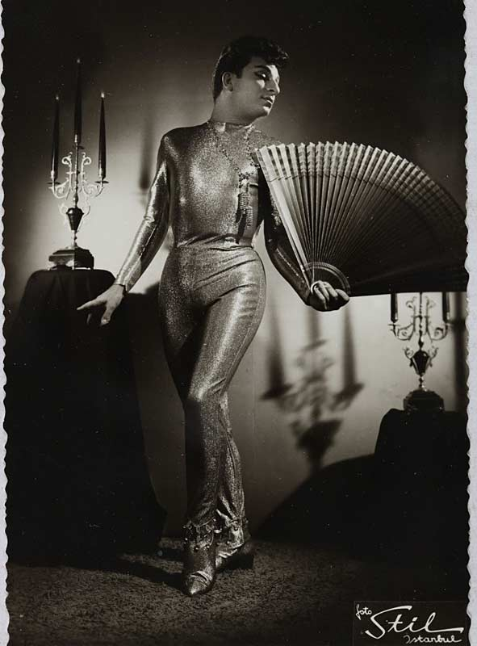
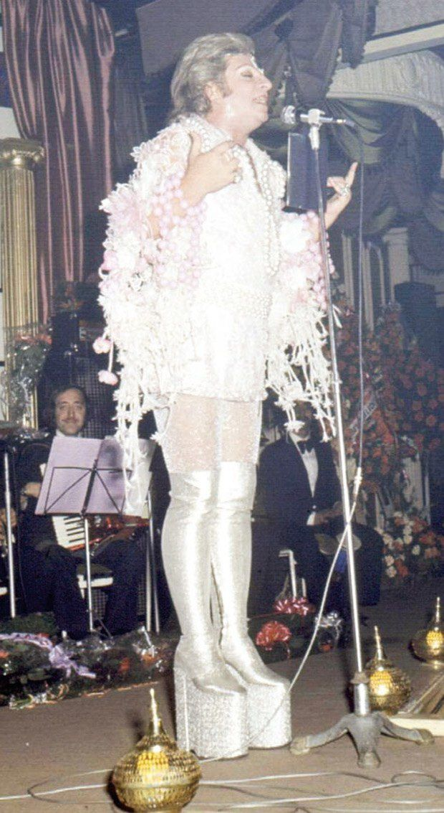
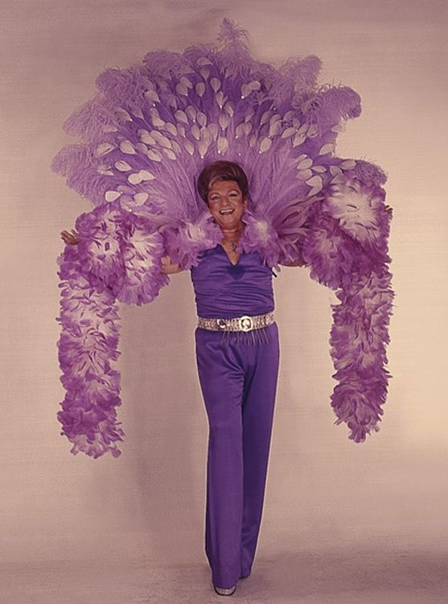

Never denying his homosexuality, the Turkish showman broke down barriers in his conservative nation, played Vegas, tutored Mick Jagger and tried to give singing lessons to Sinatra. Since his death on live TV in 1996, he has become a mythical hero in Turkey and a symbol of the LGBT movement.



- The artist performed a concert at the Royal Albert Hall in London in 1976, becoming the first Turkish artist to grace its stage.
- He performed for top government and military officials in high heels, sparkly tights and miniskirt, with peacock feathers sprouting from his ass. By then, he was known as “The Pasha of Turkish Music.
- Zeki Muren was designing his own stage costumes and giving them names like Prince of Outer Space and Purple Nights.